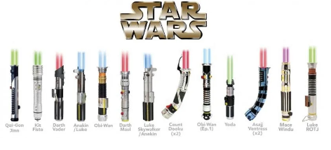
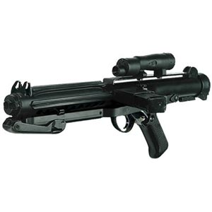

Las armas de este universo han sido unas de las mas emblematicas para la epoca, volviendose parte de la cultura popular con el transcurso de los años.
No solo por su estilo, sino por la creatividad al momento de elaborarlas, especialmente a sus inicios, por las limitaciones que existian en la epoca.
Sable de Luz
El Sable de luz, a veces denominado como espada láser, era un arma utilizada por los Jedi, los Sith y otros sensibles a la Fuerza.
Los sables de luz consisten en una hoja de plasma, impulsada por un cristal kyber, que se emite desde una empuñadura usualmente metálica
y se podía cerrar a voluntad, el sable de luz era sinónimo de los Jedi, y algunos en la galaxia creen que solo los Jedi podían usar un sable de luz.

Blasters
Un bláster era cualquier tipo de arma a distancia que disparaba rayos de intensa energía de plasma, a menudo confundidos con láser.
Operando bajo los mismos principios que el armamento láser,
los blásters convertían el gas rico en energía en un haz de partículas brillante que podía derretirse a través de los objetivos.
Vienen en una variedad de tamaños y formas, incluyendo pistolas bláster, blásters pesados y rifles bláster.
La artillería bláster también podía montarse en droides y vehículos. Podían ajustarse a diferentes niveles de intensidad,
desde la configuración de aturdir hasta matar.

Granadas
Diseñados con el propósito general de una granada, los detonadores térmicos realizan explosiones destructivas cuando se activaban.
Se sabía que las granadas de pulso electromagnético generaban electricidad que deshabilitaba los dispositivos mecánicos pero no destruía
el terreno cercano. Por lo tanto, ayudó al Gran Ejército de la República durante la liberación de Ryloth al causar un daño mínimo en los asentamientos
nativos. Este tipo de granada fue utilizado a menudo contra el Ejército Droide Separatista.
Se usaban bombas de humo para distraer a los oponentes al nublar su campo de visión.
Durante la Era Imperial, Sabine Wren creó una distracción usando una bomba de humo para que sus compañeros Rebeldes escaparan de las fuerzas Imperiales.